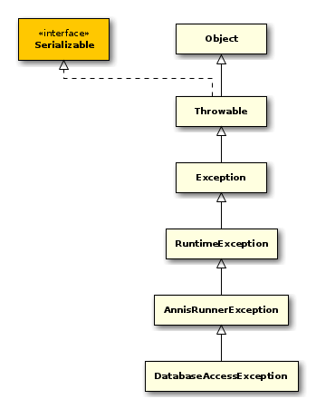
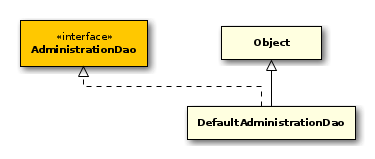

public interface AdministrationDao { // Public Methods public void createDatabase(String database);
public void createSchema();
public void createSchemaIndexes();
public void createUser(String username, String password);
public void deleteCorpora(List<Long> ids);
public void dropDatabase(String database);
public void dropUser(String username);
public boolean executeSqlFromScript(String script);
public boolean executeSqlFromScript(String script, MapSqlParameterSource args);
public void importCorpus(String path);
public List<Map<String, Object>> listCorpusStats();
public List<Map<String, Object>> listTableStats();
public List<Long> listToplevelCorpora();
public List<String> listUnusedIndexes();
public List<String> listUsedIndexes();
public void populateSchema();
public void setDataSource(DataSource dataSource);
public void setupDatabase();
}
- Autor
thomas
public class AnnisAdminRunner extends AnnisBaseRunner { // Public Constructors public AnnisAdminRunner();
// Public Static Methods public static void main(String[] args);
// Public Methods public CorpusAdministration getCorpusAdministration();
public void run(String[] args);
public void setCorpusAdministration(CorpusAdministration administration);
}

public class ApAdministrationDao extends DefaultAdministrationDao { // Public Constructors public ApAdministrationDao();
// Public Methods public void populateSchema();
}
- Autor
thomas

public class CorpusAdministration { // Public Constructors public CorpusAdministration();
// Public Methods public void deleteCorpora(List<Long> ids);
public AdministrationDao getAdministrationDao();
public void importCorpora(String[] paths);
public void importCorpora(List<String> paths);
public void initializeDatabase(String host, String port, String database, String user, String password, String defaultDatabase, String superUser, String superPassword);
public List<Map<String, Object>> listCorpusStats();
public List<Map<String, Object>> listTableStats();
public List<String> listUnusedIndexes();
public List<String> listUsedIndexes();
public void setAdministrationDao(AdministrationDao administrationDao);
}
- Autor
thomas

public class DatabaseAccessException extends AnnisRunnerException { // Public Constructors public DatabaseAccessException();
public DatabaseAccessException(String message);
public DatabaseAccessException(String message, Throwable cause);
public DatabaseAccessException(Throwable cause);
}

- Transaktionen - Datenbank-Zugriffsrechte für verschiedene Methoden - Reihenfolge der Aufrufe - Skripte in $ANNIS_HOME/scripts
public class DefaultAdministrationDao implements AdministrationDao { // Public Constructors public DefaultAdministrationDao();
// Public Methods public void createDatabase(String database);
public void createSchema();
public void createSchemaIndexes();
public void createUser(String username, String password);
public void deleteCorpora(List<Long> ids);
public void dropDatabase(String database);
public void dropUser(String username);
public boolean executeSqlFromScript(String script);
public boolean executeSqlFromScript(String script, MapSqlParameterSource args);
public String getDbLayout();
public String getExternalFilesPath();
public NamedParameterJdbcTemplate getJdbcTemplate();
public String getScriptPath();
public void importCorpus(String path);
public boolean isTemporaryStagingArea();
public List<Map<String, Object>> listCorpusStats();
public List<String> listIndexDefinitions(boolean used, List<String> tables);
public List<String> listIndexDefinitions(String[] tables);
public List<Map<String, Object>> listTableStats();
public List<Long> listToplevelCorpora();
public List<String> listUnusedIndexes();
public List<String> listUsedIndexes();
public List<String> listUsedIndexes(String[] tables);
public void populateSchema();
public boolean resetStatistics();
public void setDataSource(DataSource dataSource);
public void setDbLayout(String dbLayout);
public void setExternalFilesPath(String externalFilesPath);
public void setScriptPath(String scriptPath);
public void setTemporaryStagingArea(boolean temporaryStagingArea);
public void setupDatabase();
}
Direkt abgeleitete Klassen: annis.administration.ApAdministrationDao, annis.administration.SfAdministrationDao

public class FileAccessException extends AnnisRunnerException { // Public Constructors public FileAccessException();
public FileAccessException(String message);
public FileAccessException(String message, Throwable cause);
public FileAccessException(Throwable cause);
}